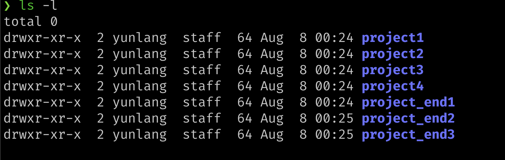
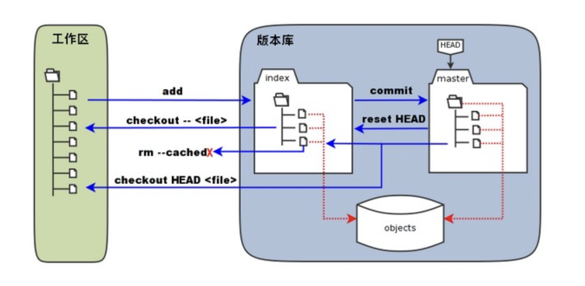
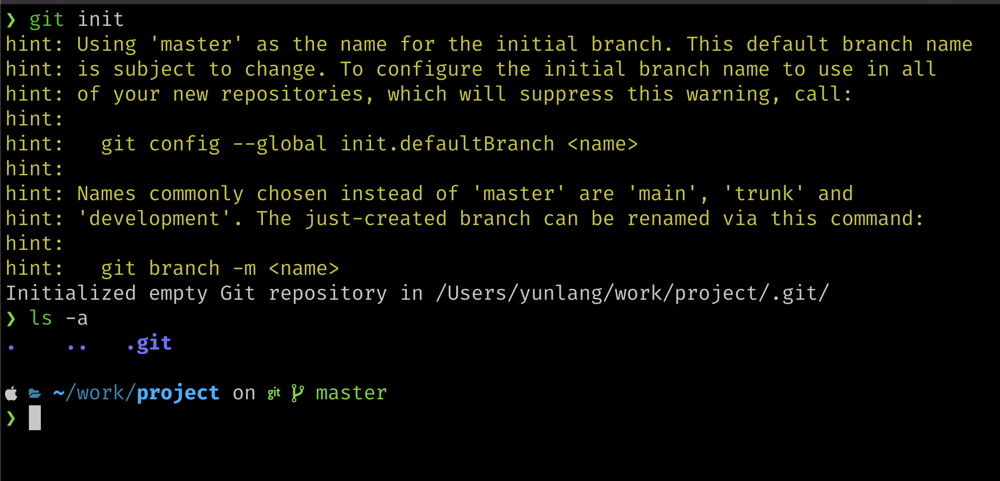
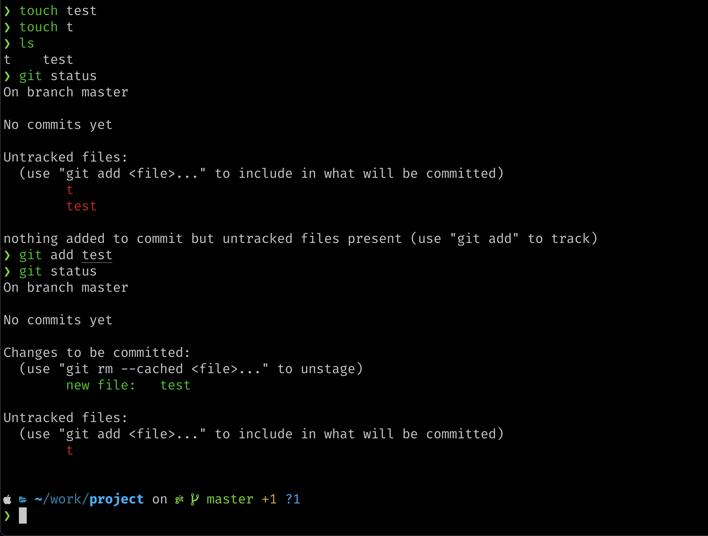
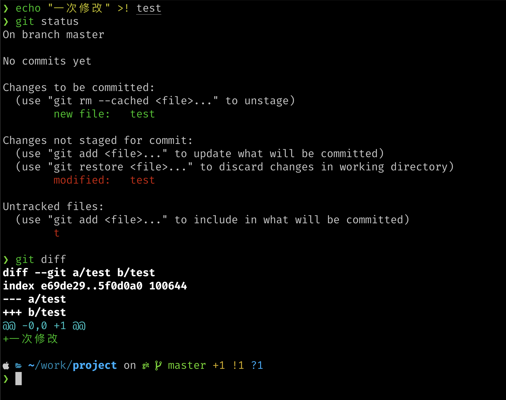

开设此课程的动机
正如The missing semester of your CS education中所说，传统的计算机科学课程往往重视理论教育，却忽视了各种工具的使用。尽管一些课程提供了课程设计或实验等方式的实践练习，但观察国内(其实就是我们学校)的课程，这些课程往往只重视问题的目的性，相关工具甚至可以追溯到父辈的计算机教育方式，对现代工具的高效使用是严重缺乏的。针对于此，我们希望能有一门简单的课程让学生可以学会使用那些高效的工具，并贯穿他的计算机学习(工作)生涯。
The missing semester of your CS education 是一门很好的计算机工具类课程教学，但对于国内而言他有些“不接地气”，我们相信你可以通过他学会相关的工具使用，但我们更希望能有更贴合的教学方案帮助到大家，因此选择创作这门课程。
针对课程，我们希望有完善的讲义能够让你只经过阅读就学习到完全内容，同样我们也考虑录制视频进行讲解作为讲义的部分补充。
准备工作
准备一个Unix-like系统环境
相对于Windows系统，学术界围绕Unix-like系统的教材多，质量好。同时大公司的服务器基本是以Linux内核为基础构建，课程所提供的工具也都为命令行工具，而大多数Unix-like系统安装命令行工具都很简单，方便。不需要繁琐的配置本地环境过程。因此我们建议你准备一个Unix-like系统环境，以下是我们推荐的几种方案。
Linux虚拟机
Linux作为目前最常见的Unix-like系统之一，你可以在网上查找到很多关于如何开始使用一款Linux发行版的教程 其中一种方式就是使用虚拟机。利用Vmware等软件，你可以直接在虚拟机中使用Linux系统而不用担心误操作带来的风险，而虚拟机也可以满足课程所需要掌握的内容。当然，由于虚拟化的原因，你需要给你的虚拟机分配一部分内存和磁盘空间，这对于你的系统性能需要一定的要求。
Linux双系统
相对于虚拟机，双系统对于系统性能的要求降低很多。现在的常见Linux发行版也提供了图形化安装方式，安装起来也很简便。你依然可以在需要使用Windows时选择进入Windows操作系统使用，但你无法像虚拟机一样同时使用Windows和Linux了。同时，由于Linux本身是作为实机使用，你需要谨慎操作，避免误操作带来的灾难(如不小心格式化系统)等。
WSL(适用于Linux的Windows子系统)
适用于 Linux 的 Windows 子系统 (WSL) 可让开发人员直接在 Windows 上按原样运行 GNU/Linux 环境（包括大多数命令行工具、实用工具和应用程序），且不会产生传统虚拟机或双启动设置开销。 这是一种我们十分推荐的方案，现在你可以在Windows下直接使用微软为你提供的Linux虚拟机服务了。不过需要注意WSL2无法与虚拟机共同使用。如果你需要使用Vmware的同时还想体验WSL，你可以选择WSL1，如果你并没有使用虚拟机的需求，那么WSL2是一个好的选择。他比传统的Vmware更快，但你对Linux操作系统的控制权限也会减少一部分。当然，应对我们的课程还是绰绰有余了。
关于WSL的更多信息，可以查看官网。
云服务器
Linux 是一个可以实现多用户登录的操作系统，因此租一台云服务器一起用(当然也可以自己用)也是很方便的。课程中所介绍的大部分是是终端操作，图形化界面并不必要，因此使用云服务器也是一个选择。目前国内各种云服务平台也对学生有一定优惠，不过租用云服务器也确实是一笔开销。
macOS
如果你是苹果电脑的使用者，macOS本身也是一种unix-like系统，Linux下的终端操作很大一部分都可以直接使用 macOS解决，你也会发现提供给Linux的命令行工具多数也都会提供macOS的安装。在这种情况下，请直接使用macOS 的终端吧。
参考资料
- WSL文档
- Linux发行版(Ubuntu) 清华镜像站 推荐维护中 的长期发行版
- 计算机教育中缺失的一课
Shell
什么是Shell
在图形界面出现之前, 与 Unix 系统进行交互的唯一方式是使用 Shell 提供的文本命令行界面(Command Line Interface, CLI), CLI 只允许文本输入, 也只能进行文本输出.
如今图像用户界面(GUI)已经被大规模使用, 用户可以更方便的与计算机进行交互. 但 Shell 在现今也有很大作用: 利用 Shell 脚本(Shell Scripts)进行自动化、利用高效率的命令行工具快速处理任务、通过 SSH 远程连接服务器进行操作(这个时候可不会有 GUI 让你用)等. 相对于 GUI, Shell 往往可以占用更少的资源，完成相同的任务.
Unix 工具是由 Unix 下的开发人员参照标准进行设计的(现今流行的标准之一 POSIX ), 遵循标准的好处是你基本可以在任何 Unix-like 系统下使用相同的工具而没有使用成本. 同时小而精的软件设计哲学让每个工具只负责一件事, 你可以通过组合各种工具完成整个任务.
你也可以设计自己的命令行工具或设计脚本来完成任务, 想一想, 只是完成一个小任务的话, 又何必花费大力气做 GUI 界面呢?
使用Shell
如今的系统大部分都提供了 GUI, 不过他们也都提供了终端模拟来进行 Shell 操作. 你可以参考你的系统找到如何启动终端.
常见的 Shell 教程在互联网上可以快速检索到, 你可以很容易通过他们掌握Shell的一些基本用法, 因此我们在这里不会过多介绍. 接下来我们将会介绍几个能够提升你Shell使用的功能, 以及一些实用的命令行工具.
帮助文档
这里我们介绍三种你能掌握一种命令行工具用法的方式：
-
man
man 命令是官方的权威的手册文档, 是英文 manual 的缩写, 你可以通过 man [参数] 对象的方式查找对象的使用说明文档, 但他一般是十分详细的, 你可能需要仔细阅读才能掌握. -
-h/--help
命令行工具通常也会内置帮助文档, 一般通过命令 -h/--help的方式进行查询, 相比man命令, 他要更简洁和难以掌握. -
tldr
tldr(too long don't read) 简化了繁琐的 man 指令文档, 通过简短明确的示例让你能够快速上手命令行工具, 相比 man 要更亲民一些.
tldr本身也是命令行工具, 第一次使用时需要从github上下载数据库, 因此可能会慢一些.
管道
用 | 建立管道, 如 program1 | program2 可以将 program1 的输出变成 program2 的标准输入, 利用管道, 可以将多个命令行程序放在一起使用, 如可以通过多个 grep 逐渐过滤检索, 相对于写入到临时文件, 管道的速度要更快.
还记得说过的Unix工具只负责一件事吗, 通过管道, 你可以让这些工具结合起来, 共同完成一项任务.
标准I/O重定向
标准输入输出是 Unix 中的重要概念之一, 所有的Unix程序都从标准输出读入, 并将数据写入到标准输出中, 一般的标准输入输出目的都是终端, 你可以通过 Shell 语法对标准输入输出进行重定向, 一般是从定向到文件.
用 < 改变标准输出, 使用 program < file可以将 program 程序的输入重定向到 file 文件中.
用 > 改变标准输出, 使用 program > file可以将 program 程序的输出重定向到 file 文件中.
program < file1 > file2 program 会从 file1 中读取文件, 并将处理好的输出写入到file2中.
I/O重定向也可以搭配管道一起使用.
/dev/null
/dev/null 是一个垃圾桶, 任何传输到此文件的数据都会被系统丢弃掉, 并返回一个成功完成写入数据的返回值. 他在你想丢弃文件, 或你只想知道命令的退出状态时非常有用.
关于退出状态, 这里以 grep 为例, 他在匹配到时返回相应行, 但在匹配失败时会返回1, 通过将 grep 的输出重定向到 /dev/null 你可以只关系是否匹配而不关系匹配到的相应行.
Shell 工具
在这里介绍几个常见的 Shell 工具，选择好用的 Shell 工具可以极大提升你的工作效率，避免重复工作。
查找文件
查找是文件或目录是每个人（尤其是程序员）最常见的重复任务之一。在类 Unix 系统中包含一个名为 find 的工具，提供了在 Shell 环境下强大的搜索能力，find 会在指定位置下递归的搜索符合条件的文件：
#查找当前目录下的.txt文件
find . -name "*.txt" -type f
#查找当前目录下命名为 test 的目录
find . -name test -type d
#查找当前目录下修改时间5日以内的文件
find . -mtime -5 -type f
#查找当前目录下大小在100k到1M内的文件
find . -size +100k -size -1M -type f
你可能在查找到文件后对查找到的文件进行一些操作（比如删除），find 命令提供了 -exec 解决这个问题。
#查找并删除当前目录下扩展名为 .txt 的文件
find . -name "*.txt" -exec rm {} \;
虽然 find 功能强大，但他的语法却十分复杂，这个时候你可能需要 fd ，fd 是一种简单又快速和用户友好地 find 替代品，他为需要 find 基本功能但并不需求强大功能的用户提供了一个好的替代方案。
查找代码
另一个常用的功能是搜索代码，你可能需要在文件中查找到某一代码片段是否存在，并找到他们的位置。
大部分类 Unix 系统中都提供了 grep 工具，他是一个强大的文本搜索工具，他会对输入文本进行匹配的深入工具，这里我们只讨论他的简单使用和一些好用的选项，关于如何使用 grep 搭配正则表达式，你可以在学过正则表达式后掌握他。
#在 /etc/passwd 文件下查找匹配 root 的文本
grep root /etc/passwd
#搜索多个文件中包含 root 的内容
grep root 'file1' 'file2'
#在 /etc/passwd 文件下查找匹配 root 的文本，并输出上下文前后两行
grep -C 2 root /etc/passwd
#在/etc/ 目录下递归搜索匹配 root 的文本
grep root /etc/
#反查功能：搜索不包含 root 的所有行
grep -v root /etc/passwd
#展示满足条件的文本在第几行
grep -n root /etc/passwd
#展示有几行满足成功搜索到
grep -c root /etc/passwd
grep，egrep 和 fgrep 常常被称为是文本搜索的三剑客，感兴趣的可以上网查找他们的区别，现代 grep 已经可以解决掉全部的需求了。
和 find 一样，现代也出现了很多替代 grep 的替代品，如 ack，ag 和 rg。
现在，你可以选取一个你喜欢的工具并开始使用它了。
更多工具
因为好用的 shell 工具太多了，我们无法一一列举并教你如何使用（事实上也不应该）。这里列举出一些我在日常使用中觉得有用的工具（ cp，mv等工具太多常用则不在阐述 ）你可以使用 man 或 tldr 查找他们的用法。
远程登陆
- scp: 在不同 Linux 之间提供传送文件的功能
- ping: 确定网络和各外部主机的状态；跟踪和隔离硬件和软件问题；测试、评估和管理网络。
- ifconfig: 查看和配置网络设备。
性能监控和优化命令
- top: 显示当前系统正在执行的进程的相关信息，包括进程ID、内存占用率、CPU占用率等。
- free: 显示系统使用和空闲的内存情况，包括物理内存、交互区内存(swap)和内核缓冲区内存。
- ps: 用于显示当前进程的状态，类似于 windows 的任务管理器。
我经常使用 ps 与 grep 结合（利用管道）来查看某个进程是否在运行中。
reference:
鸟哥的Linux私房菜
Linux命令行和shell脚本编程宝典[Richard Blum]
The missing semester of your cs education
Shell 脚本学习指南[Arnold Robbins & Nelson H.F. Beebe]
Linux 命令行与 Shell 脚本教程(WIP)
正则表达式
引言
在编写处理字符串的程序或网页时，经常会有查找符合某些复杂规则的字符串的需要。正则表达式就是用于描述这些规则的工具。换句话说，正则表达式就是记录文本规则的代码。
与通配符(如*)类似，正则表达式也是用来进行文本匹配的工具，不过他要更为精确和复杂。学习正则表达式的最好办法就是利用例子学习。
元字符
现在考虑从英文小说里查找hi，你可以使用正则表达式hi,但这样的代价是你会查找到文本中所有有hi的位置,而不是一个单词。为了查找到一个单词你可以使用\bhi\b,他会帮你匹配单词hi存在的位置。
\b是正则表达式中元字符(metacharacter),代表单词的分界处，但请注意\b并不匹配用来分界单词的字符(如空格，标点或者换行符)，他匹配的是一个位置。
更为精确的说法是：\b匹配一个前一个字符和后一个字符不全是\w的位置。
这样的元字符在正则表达式中有很多，他们帮助构建了正则表达式强大的匹配能力。你不需要全部记住，可以在使用中进行查阅，并在实践中掌握他们。
如果你要寻找这样的一个字符串：A单词后面跟着一个B单词，AB中间可以有任意字符存在。可以使用\bA\b.*\bB\b。
这里的.和\*也是两个其他的元字符。.可以匹配除了换行符之外的任何字符，而*比较特殊，他使得前面的内容可以连续重复使用任意次来匹配字符串。
如果你学过离散数学或者计算理论，应该对*不会太过陌生(尤其是学过计算理论)，之后你还会看到
+元字符，他们的区别和你在离散数学中他们的区别相同。
下面给出常见的元字符，和使用他们的一些例子
| 元字符 | 说明 |
|---|---|
| . | 匹配除换行符以外的任意字符 |
| \w | 匹配字母或数字或下划线或汉字 |
| \s | 匹配任意的空白符 |
| \d | 匹配数字 |
| \b | 匹配单词的开始或结束 |
| ^ | 匹配字符串的开始 |
| $ | 匹配字符串的结束 |
现在我们可以回顾一下\b的精确描述，理解\w的存在。
例子
- \ba\w+\b
匹配以字母a开头的单词——先是某个单词开始处(\b)，然后是字母 a，然后中间至少有一个字母或者数字(\w+)，最后是单词结束处(\b)。用到了\w与+的共同使用,*可以有0，但+至少一个。
- \b\w{6}\b
匹配刚好六个字符的单词
- ^\d{5,12}$
^ 和 $保证了是整个字符串的匹配，而不是字串，{5，12}代表重复的次数不能少于5次，不能多于12次，否则都不匹配。
练习
交互式的学习正则表达式是很有帮助的，在这里我们列出了几个网站：
Regex Learn ：一个正则表达式交互课程
正则表达式在线测试 ：菜鸟驿站提供的正则表达式在线测试工具
Reference
The Missing Semester of Your CS Education
编辑器
Vim
Neovim
Vscode
vscode的好处是胜在轻量，而且拥有较为全面的插件，你几乎可以用vsocde干各种事情，比如写论文（markdown），甚至刷知乎。但值得注意的是vscode本身是一个编辑器，你不能过于希望其无所不能，比如安卓开发，你不能指望vscode加个虚拟机进去（所以这时候建议还是老老实实用android studio）
版本控制(Git)
你有没有遇到这样的情况， 你正在开发一个项目，昨天的代码运行的很好，但当你今天进行一次修改时，发现程序无法运行了。你想进行一次改动，但当改来改去，由于修改的地方太多，你甚至忘记了都改动了哪些部分。
现在你想记录下每一次的改动了，于是出现了v0.1，v0.2，v0.3等各种版本，当你终于完成了工作时，你的工作树很有可能是这样。

另一件悲伤的事情，你很可能忘记了都改动了什么。
现在你要和朋友合作这个项目，为了让你的改动能在他的电脑上运行，他的改动能在你的电脑上运行。你需要进行项目的协同了，你能想到的几个办法可能是U盘又或者是QQ文件。但毫无疑问，无论哪种，你都需要将他做的部分放入你现在的项目里， 还要祈祷你们改动的文件没有交叉。当然，你们也会遭遇上面的麻烦。
利用版本控制工具可以帮助我们管理代码的修改历史；不仅如此，它还可以让协作编码 变得更方便。现代的版本协作系统可以回答以下的问题：
- 当前模块是谁编写的？
- 这个文件的这一行是什么时候被编辑的？是谁作出的修改？修改原因是什么呢？
- 最近的1000个版本中，何时/为什么导致了单元测试失败？
版本控制系统
目前常见的版本控制系统有集中式版本控制系统和分布式版本控制系统两种，你很难评价他们的优劣。集中式版本控制系统将内容存储在服务器上，用户想要使用需要先拉取到自己的计算机上进行修改，再将修改保存到服务器上。分布式版本控制系统则在每个人电脑中都保存了版本库内容。当服务器崩溃时，集中式会失去所有版本库数据，但对于分布式，只要一个人的电脑中留有备份，就获得了整个版本库的数据，能够很快从数据中恢复。
为了保证分布式版本控制系统中每个人的版本得到统一，分布式版本控制系统通常也会有一个中继用服务器。
两种版本控制系统的典型代表有tortoisesvn与git
我们主要讲述如何利用Git进行版本控制。
安装Git
你可以从官网下载页下载Git的最新版本，我们将针对命令行工具进行讲解，掌握了命令行，GUI下的你也可以很快上手。
我们将从工作中讲述Git的常见操作。
Git操作
Git 工作区、暂存区和版本库
我们首先要理解下Git工作区，暂存区和版本库的概念
- 工作区：你在电脑里能看到的目录，即你直接操作的项目环境
- 暂存区：暂时存放当前的提交版本，但未真正保存到版本库记录中
- 版本库：真正记录了项目开发中的版本库数据

为什么要有暂存区？ 通过暂存区的临时提交，可以有效保证最终提交时版本历史记录的完整性，确保commit的粒度，暂存区可以临时存储尚未完成的“半成品”代码。
新建仓库
为了使用Git，我们需要初始化一个Git仓库，在初始化Git仓库后，会在当前目录下生成一个 .git 目录，该目录会包含版本库的所有信息，工作区保持不变。
在当前目录初始化Git仓库
git init

可以看到我们的目录下多了一个.git目录（默认隐藏）
下面我们需要设置提交代码时的用户信息
git config --list #查看当前已经设置的内容
git config --global user.name "your name"
git config --global user.email "your email"
--global参数会修改全部仓库下的信息，如果你只想修改当前仓库，可以去掉该参数
将修改保存到暂存区
添加修改并将修改保存到暂存区，可以使用git add命令，例如我们新建一个test文件，并将文件加入到暂存区。
touch test
touch t #新建文件
#git add . #将当前目录下所有内容添加到暂存区
git add test #将test文件添加到暂存区
利用git status，我们可以查看当前暂存区状态。

在未添加任何文件时，我们可以看到没有文件被跟踪，但当我们将test放入暂存区后，可以看到test已经被跟踪，但t仍然没有被跟踪。因此暂存区可以很方便的帮我们存储以单个文件为粒度的文件提交。
目前我们的test文件是空的，下面我们修改下test文件并查看git status输出，观察有什么变化。
echo "一次修改" >! test
git status
git diff

通过git status，当工作区与暂存区不同时，会提示我们发生了修改，而使用git diff能够直接反应变化情况（针对已跟踪文件）。
git diff指令不仅能用在工作区和暂存区的比较中，事实上很多Git命令在不同场合都有不同效果。
撤销修改
如果你认为工作区的修改出错，想要回到暂存区，可以使用git checkout命令完成撤销。
git checkout test
git status
cat test
也可以利用git rm --cached <file>撤销添加到暂存区的文件。
git rm --cached test #可以看作git add的逆过程
git status
将暂存区文件提交到本地仓库
使用git commit 命令可将暂存区文件提交到本地仓库，该命令会调用设置的编辑器以要求你添加提交信息，一种更方便的使用方式是git commit -m "your message"，你可以直接键入信息而非调用编辑器。
git commit默认使用vim作为编辑器，你也可以自己进行修改，比如我习惯使用neovim，我会通过git config --global core.editor "nvim"进行修改。
进行提交
git commit -m "first commit"
为了体现提交信息，我又将t文件加入到暂存区中进行了第二次提交，这样使用git log可以查看版本库的提交信息。
 这样什么人什么时间进行了提交就一目了然了，你也可以通过每次提交的哈希值回退到任何一个提交版本。
这样什么人什么时间进行了提交就一目了然了，你也可以通过每次提交的哈希值回退到任何一个提交版本。
pratice
- 需要更多的了解 git 的工作方式和使用，可以阅读Pro Git，也可以通过可视化的练习更多了解不同的分支和分支间的切换Learn Git Branching
元编程
维基百科释义：https://en.wikipedia.org/wiki/Metaprogramming
Makefile
参考：
- Learn Makefiles: https://makefiletutorial.com/#makefile-syntax
TODO： 手把手写出模板文件的教程
最简单的模板
这里假设正在编译某个 C++ OpenGL 项目。其文件树如下：
.
├── include
│ └── Utils.h
├── Makefile
├── src
│ ├── main.cpp
│ └── Utils.cpp
├── fragShader.glsl
└── vertShader.glsl
如你所见，该文件内的头文件都在 ./include 中，源文件都在 ./src 中。可以编译其的 Makefile 内容如下：
SRCDIR = ./src
SRC = $(shell find $(SRCDIR) -name *.cpp)
OBJS = $(patsubst $(SRCDIR)/%.cpp, %.o, $(SRC))
EXE = main
CXX = $(shell ls /bin | grep g++ | grep x86_64 | grep linux)
CXXFLAGS= -Wall -O2
LDFLAGS = -lGL -lglfw -lGLEW -lsoil2
all: $(EXE)
$(EXE): $(OBJS)
$(CXX) $^ $(LDFLAGS) $(CXXFLAGS) -o $(EXE)
$(OBJS): %.o: $(SRCDIR)/%.cpp
$(CXX) $(LDFLAGS) $(CXXFLAGS) $^ -c
clean:
rm $(OBJS) $(EXE)
接下来逐一说明。
命名惯例
首先，是 Makefile 内的一些命名惯例：
CC: C 语言编译器CXX: C++ 编译器CFLAGS: 给 C 语言编译器的 flag 参数CXXFLAGS: 给 C++ 编译器的 flag 参数CPPFLAGS: 给预处理器的 flag 参数LDFLAGS: 传递给链接器，链接一些指定的库
其次是以上模板的命名含义，这些含义是按照大部分惯例命名的：
SRCDIR: 源文件的文件夹SRC: 源文件OBJS: 目标文件EXE: 可执行文件
当需要区分 C 还是其他语言的源文件的时候，可以添加诸如 C，CXX，PY 等前缀。
变量命名实际上可以随自己想法任意命名，不过也有命名惯例可以通过这里了解：Makefile-Conventions
Makefile 语法
一个 Makefile 包含许多规则。每一个规则是如下格式：
targets: prerequisites
command
command
command
- targets: 目标
- prerequisites: 依赖
- command: 指令
说明：
- 目标可以是一个或多个文件名，也可以是非文件目标；
- 依赖是一个或多个文件名，该文件可以与目标有关，也可以与目标无关；
- 指令都是使用当前 shell 在当前文件夹内执行的。
- 每个目标只有在依赖存在时候，才会执行接下来的 command，其中对对依赖的查找是从 Makefile 所处位置开始的。
注意，Makefile 的缩进是需要的，同时需要硬制表符而不是四个空格这样的经过转换的制表符。如果有
Makefile:2: *** missing separator. Stop.这样的报错大多是制表符问题。
标准目标都在 Makefile-Conventions 里有说明。
常见的是 all、install、clean 等。其中，all 是默认目标。
当在 Makefile 存在的目录下，执行 make 的时候，make 会在当前文件夹下查找 Makefile，如果找不到就会寻找 makefile。实际上会最先寻找 GNUmakefile，但是该名称并不被推荐，除非特别指定是一个 GNU 的 make。如果以上都找不到则会报错。
但是，也可以通过 -f name 或 --file=name 的方式指定 Makefile 的名称。
当找到 Makefile 以后，便会开始执行 all 目标，它会先检查是否存在，如果依赖都存在那么直接执行接下来的指令。否则它会寻找是否有以该依赖作为目标的规则，找到后会先执行该规则然后再执行 all 目标。其他目标也有一样的逻辑。
如果想指定某个目标，可以用 make target-name 的格式，譬如 make clean 的方式执行 clean 目标。如果没指定目标就会如上述所说的默认执行 all。
定义变量
该模板 Makefile 开头定义了一些变量，含义如上所述。
Makefile 赋值语句将等号左侧看作变量，右侧看作字符串。字符串从等号后立刻开始，一直到遇到表示注释的 # 或者换行。
a = abc # 保存字符串 " abc "
b = 'abc' # 保存字符串 " 'abc' "
c = "abc" # 保存字符串 " \"abc\" "
注意，以上列出的变量保存的值是有空格的
Makefile 的变量存储的都是字符串。
同时，它在处理字符串的时候，会将以空格分割的字符串当作字符串数组。输出内容的时候则是输出整体。
获取变量内容
获取变量中的值作为字符串，可以使用 $(variable) 的格式。
a =abc
b ='abc'
c ="abc"
all:
echo a $(a) $(b) $(c)
如果要执行 Makefile 的内容，只需要在包含 Makefile 的文件夹内执行 make 指令，就可以执行 all: 开始的指令。如下是输出情况：
$ make
echo a abc 'abc' "abc"
a abc abc abc
可以看出，第一个 a 并没有被展开，而后面的内容因为包裹在 $() 中而被展开。
设置目标与依赖
all: something
echo "Oh, you get all!"
something:
echo "You need something."
touch something
执行 make 后便会有如下输出：
$ make
echo "You need something."
You need something.
touch something
echo "Oh, you get all!"
Oh, you get all!
执行 shell 命令并获取输出
会因为 shell 不同有多种方法，譬如在 bash 中，可以用反引号额外执行指令获得输出。比如：
$ ls `echo '.'`
以上指令会先执行反引号的内容获得结果然后再执行 ls 获取当前文件夹下的信息。
所以我们可以做如下变量
inner-command =`ls | grep .*\.cpp`
然后该变量就可以作为一个句中 shell 指令执行。
不过，以上方法依赖于特定的 shell。bash 是以上的操作，fish 就可能不是这样的语法了。同时，该方法获得的输出无法处理，只能是原始内容，这对后续处理是非常不方便的。
在 Makefile 内有一个比较通用的方法执行 shell 命令，并获取输出保存到变量中。如下面的例子：
CXX = $(shell ls | grep .*\.cpp)
看起来和 lisp 很相似，它的语法格式是 $(command args) 获得的输出可以立即当作 args 使用也可以保存到变量里等待接下来继续处理。
而执行 shell 命令就是做如下替换
- command: shell
- args: shell 要执行的命令
光就如上命令有等价的另一种写法：
CXX = $(wildcard *.cpp)
不过
CXX = *.cpp
只会保存字符串 *.cpp 而不会用通配符搜索。
更多额外的指令可以查询：Quick-Reference
比如 $ + ^，% 类似这样内容的用法也都在上述链接中可以找到。建议慢慢熟悉，到需要用的时候查找。
回到最初的模板
Makefile 模板，接下来就可以很好的描述 Makefile 模板的含义：
- 定义源代码文件夹变量
SRCDIR为./src - 之后在展开源代码文件夹变量后，就是从源代码文件夹中搜索名称以
.cpp结尾的文件，因为是从 Makefile 位置开始搜索，所以会保留./src的前缀。将该结果保存到SRC中。 - 接下来使用
patsubs操作，对一空格分割的字符串数组中的每一项，获得源文件去除文件路径前缀和拓展名的基础名，将其加上.o后缀，作为目标文件的文件名。 - 定义输出的可执行文件名是
main - 在
/bin中查找一个g++，该g++是x86_64的且在linux平台下。将其作为编译器。而实际上，正常的应该只需要g++即可，不需要做这么多细分。 - 设置 C++ 编译 flag 为
-Wall和-O2。 - 设置链接 flag 为
-lGL-lglfw-lGLEW-lsoil2用于链接需要的库。 all目标依赖main，且没有其他操作。main依赖目标文件，如果满足以后，则会用依赖替换$^的位置。展开其他内容后执行指令。$(OBJS)内以空格分割为字符串数组，且每个模式是%.o形式，此时%指代对应的目标文件的基本名称，需要来自SRCDIR的对应的%.cpp文件。如果满足，则会用$(SRCDIR)/%.cpp替换$^然后执行指令编译。clean目标删除当前文件夹下的指定目标文件和可执行文件。
可能会好奇为什么要获取源文件的基本名称并转换为目标文件的名称，而不是直接使用带路径的名称。原因是 g++ 默认生成目标文件放在执行指令的文件夹下。所以如果带了路径，可能会进入到源文件所在的文件夹内去寻找目标文件。
不过这只是一个起步的文件，在 GNU 的 reference 里还有很多的指令没能在这个简单的 Makefile 中展示出来。
CMake
参考：
- Modern CMake for C++ Discover a better approach to building, testing and packaging your software (Rafał Świdziński)
很多未接触
cmake的都会望而却步，然而，就算是接触的人实际上也不愿意折腾cmake。
TODO: cmake 简易教程
接下来给出通用模板：
cmake_minimum_required(VERSION 3.20)
project(glt)
set(CMAKE_CXX_STANDARD 20)
set(CMAKE_CXX_STANDARD_REQUIRED True)
include_directories(/usr/include/opencv4)
file(GLOB CSRC ./*.cpp)
link_libraries(GL glfw GLEW soil2)
add_executable(glt ${CSRC})
说明：
cmake_minimum_required(VERSION 3.20): 设置 cmake 需要满足的最小版本，这里设置为3.20；project(glt): 设置项目名称，这里设置为gltset(CMAKE_CXX_STANDARD 20): 设置项目的C++版本，这里设置为20。实际上，不设置是可以用默认版本的。只是在使用vscode: 等工具开发的时候，可能就会在使用C++ 20标准开发时候报错。所以如果想用指定版本C++配合编辑器开发，推荐设置。set(CMAKE_CXX_STANDARD_REQUIRED True): 是否需要满足C++版本需求。这里设置为True。include_directories(/usr/include/opencv4): 额外包含头文件的文件夹位置。一些头文件文件夹位置可能不能通过默认路径找到，故需要自己指定。该函数相当于使用-I指定头文件路径。这里设置了/usr/include/opencv4，包含opencv4头文件文件夹。这里因为使用了绝对路径，所以可移植性很差，推荐使用 cmake 的查找找到包，不过这就需要一定的cmake脚本编写能力。file(GLOB CSRC ./*.cpp): 获取文件名满足第三个参数的文件，并将文件以字符串形式保存到CSRC变量中，其中GLOB获取方式无法将CSRC内容继承到子文件夹里的 CMakeLists.txt 中。link_libraries(GL glfw GLEW soil2): 连接额外库，将库名或者绝对路径放入即可。这里指定了四个 lib。add_executable(glt ${CSRC}): 设定可执行文件名称为glt，源文件是CSRC变量中的内容对应的文件。
Docker
什么是Docker
- Docker 是一个开放源代码软件，是一个开放平台，用于开发应用、交付（shipping）应用、运行应用。用户可以将打包好的应用保存到一个镜像中，并在任何支持 Docker 的机器上运行。
- Docker 容器与虚拟机类似，但他仅仅将操作系统层虚拟化而非虚拟化硬件，因此容器可以更高效的利用硬件平台。
- 通过 Docker，用户可以让他们的应用“一次打包，多地运行”，借助 Docker，我们可以保证部署的应用环境一致，不会由于各种依赖造成问题的出现。
Docker 可以支持环境的分离，比如你仅仅使用某软件而不想让自己的机器内安装乱七八糟的各种依赖，可以使用 Docker。
由于 Docker 容器相比虚拟机开销较小，因此你可以在一个硬件平台下运行多个 Docker 容器，而不用过度关心性能问题。
安装 Docker
针对不同系统的安装，你可以在主页中找到安装方法，由于 Docker 的软件源在国外，你可以选择使用国内源，这里我们推荐清华镜像站。
东北大学镜像站什么时候站起来
在本讲义编写期间，发现国内的 dockerhub 镜像站大多无法使用，相对可用的是阿里云提供的容器镜像服务，有关容器镜像服务的内容，可以进入阿里云->容器镜像服务->镜像工具->镜像加速器进行查询。
dockerhub，是 docker镜像 所使用的镜像源站点。
安装结束，先爽一把吧！
docker pull hello-world
docker run hello-world
你的电脑可能会显示
Cannot connect to the Docker daemon at unix:///var/run/docker.sock. Is the docker daemon running?，这是 docker 服务还未在进程中启动所导致，现在你可以在搜索引擎中尝试找到解决方案，记得关键字中加入你的具体操作系统。
上手 Docker
让我们来看执行刚才的两条命令发生了什么：
首先是docker pull，他会从镜像仓库中拉取相应镜像到本地，而通过docker run则可以创建新的容器（从镜像中）并运行，因此两条指令完成的操作就是从镜像站拉取镜像并以容器运行
仓库
仓库中提供了各种各样的镜像，包括一些用户打包的镜像，每一次运行docker pull会先检查本地仓库是否有这个镜像，没有则会去镜像仓库拉取。
容器与镜像
容器与镜像是在 docker 中最常见的两个概念
-
镜像是只读的文件，是一个应用程序的“打包”，提供了程序所要运行的环境。
-
容器是镜像的实例，由 docker 进行创建并彼此隔离，是一个真正的运行环境
-
可以通过一个镜像创建出多个容器，容器间彼此隔离，互不影响
导出与导入
docker 的强大之处在于你可以将通过镜像创建的容器再次打包为镜像（或容器）并分发到其他设备上，这使得你可以实现一次创建，多次部署。
docker 为每个容器（镜像）都提供了一个唯一的 id 号，当你想要使用某个容器（镜像）时，可以通过 id 号确认。
#列出当前镜像
docker images
#列出当前全部容器
docker container list
需要注意当你退出一个容器时，容器并没有直接删除，而是停止，你可以重新进入容器继续使用，也可以通过
docker rm 'id'删除某个容器。
导出某个容器有两种方式，docker save 和 docker export
docker save保存的是镜像（image），而docker export保存的是容器（container）
相应的，导入也有两个方式，docker load 和 docker import
docker load加载的是镜像，而docker import加载的是容器，但请注意，实际上docker import是将容器导出为一个新的镜像
参考资料
持续集成&部署
Markdown
你的学习和工作生涯中必不可免需要编写文档，同样也有一部分人喜欢记录笔记或博客。当使用纯文本时，往往会觉得功能太少,，缺少层次，难以标注重点。但当使用 Word 或 LaTex ，又困苦于他们的繁琐复杂。
现在可以试试 Markdown 了。Markdown 是一种轻量化的标记语言，通过在纯文本格式中添加简单的格式化元素来编写文档，并简单转换为多种格式（常见的为HTML）。
Markdown 的应用非常广泛，如 Github，StackOverflow，掘金等都支持使用 Markdown 语法。包括本项目的内容，云狼的个人博客，也都是利用 Markdown 语法来书写并生成的。
如何上手
Markdown 本质是将人们编写文本时常用的习惯标准化，使得可以使用简单的格式化元素来进行格式设置。如
- 用
#开头来表示标题，通过#数量表示标题级别，如##为二级标题 - 用
*包围的内容被设置为斜体，用**包围的内容被设置为粗体 - 用
`包围的内容为被标记为代码块 - 通过
[显示名称](链接)来设置超链接 - 在段落前添加
>以设置为块引用
之后你就可以开始使用 Markdown 来编写文档了。
注意
其实 Markdown 并没有一个标准化版本，针对具体场景也有一些相应的扩展 Markdown 语法存在，但大部分场景下的简单语法格式都是通用的。你可以在支持的 Markdown 的网站去检查是否支持一些扩展语法。
部分基本语法也并未在讲义中提及，请自行查阅学习。
其他资源
Markdown 教程 好用的中文教程，但其实并非官方
Markdown Reference 一种标准规范的 Markdown 语法教程
Markdown Tutorial 一个开源网站，使用他在浏览器中尝试 Markdown
typora 广受欢迎的所见即所得的 Markdown 编辑器，稳定版收费，测试版可以免费使用
vscode 没错这玩意写啥都很舒服
yl's blog 云狼的博客（里面没有 Markdown 相关）